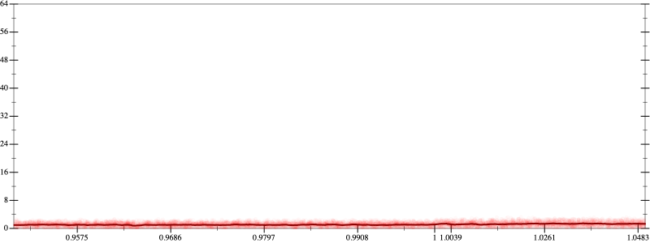
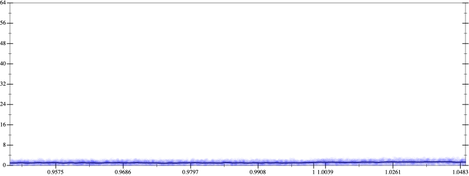
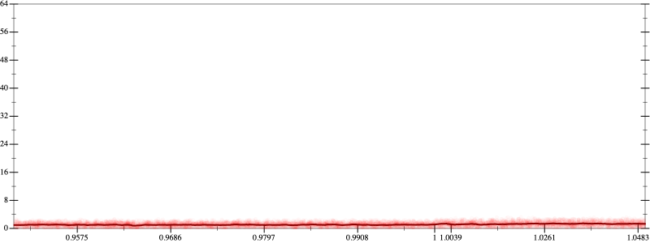
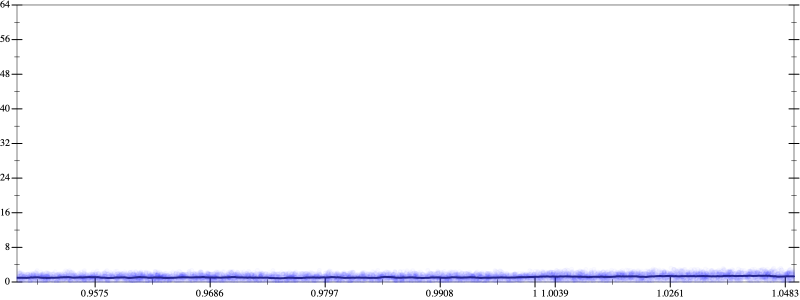

Initial program 1.1
\[\left(\left(-120.0 + 720.0 \cdot \left(x \cdot x\right)\right) + -480.0 \cdot \left(\left(\left(x \cdot x\right) \cdot x\right) \cdot x\right)\right) + 64.0 \cdot \left(\left(\left(\left(\left(x \cdot x\right) \cdot x\right) \cdot x\right) \cdot x\right) \cdot x\right)\]
- Using strategy
rm Applied associate-*r*1.1
\[\leadsto \left(\left(-120.0 + 720.0 \cdot \left(x \cdot x\right)\right) + \color{blue}{\left(-480.0 \cdot \left(\left(x \cdot x\right) \cdot x\right)\right) \cdot x}\right) + 64.0 \cdot \left(\left(\left(\left(\left(x \cdot x\right) \cdot x\right) \cdot x\right) \cdot x\right) \cdot x\right)\]
- Using strategy
rm Applied add-cbrt-cube1.1
\[\leadsto \left(\left(-120.0 + 720.0 \cdot \left(x \cdot x\right)\right) + \left(-480.0 \cdot \left(\left(x \cdot x\right) \cdot x\right)\right) \cdot x\right) + 64.0 \cdot \left(\left(\color{blue}{\sqrt[3]{\left(\left(\left(\left(x \cdot x\right) \cdot x\right) \cdot x\right) \cdot \left(\left(\left(x \cdot x\right) \cdot x\right) \cdot x\right)\right) \cdot \left(\left(\left(x \cdot x\right) \cdot x\right) \cdot x\right)}} \cdot x\right) \cdot x\right)\]
Applied simplify1.1
\[\leadsto \left(\left(-120.0 + 720.0 \cdot \left(x \cdot x\right)\right) + \left(-480.0 \cdot \left(\left(x \cdot x\right) \cdot x\right)\right) \cdot x\right) + 64.0 \cdot \left(\left(\sqrt[3]{\color{blue}{{\left({x}^{3}\right)}^{\left(1 + 3\right)}}} \cdot x\right) \cdot x\right)\]
 
